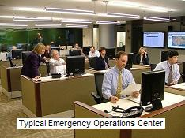
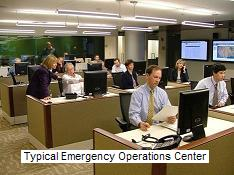
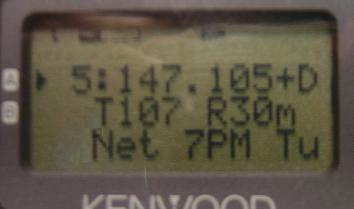
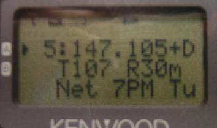

APRS Tactical Real-Time Operations
APRS Tactical Real-Time Operations
APRS Tactical Real-Time Operations
APRS Tactical Real-Time Operations
 
. Ev Tupis noted on the APRSSIG:

. Ev Tupis noted on the APRSSIG:
. APRS is billed as a situational awareness service,
. yet the map is largely barren of situational
. awareness information. I ask myself "why?"
Good question!... In the middle years as APRS grew in user size, it seemed to
deminish evey year from its original intent as a tactical real time
information resource and fast 2-way communications system to nothing but
a vehicle tracking system in many people's eyes. Its time to re-open their eyes!
This page suggests some ideas why users have this misconception:
Click to see a year's animation!
APRS is not about vehicle tracking. It is a single information resource channel where everything that is going on in ham radio in the surrounding area can be announced and updated in real time. It presents to the viewer on his APRS radio front panel all that is happening right now, where it is, and all the info he needs to participate whether it is an event, happening, net, activity, announcement, future activity, or situation. The APRS channel is his one-stop look at everything that could be going on in the local area, and his one-stop place to post what he might be doing that might be of interest to others. APRS is not about GPS positions, it is about a situational map display of everything that is happening, and most of that is OBJECTS containing INFO on the activty and how to contact other operators. Here are some local info examples to the mobile:
 



These objects inform visitors or travelers (from left to right), the locally recommended voice repeater, its tone and approximate range. Other eobjects can announce the local Echolink and IRLP nodes and other info of local interest to help the traveler join in on local operations. In the D710 mobile radio, these nearby objects can be sorted by distance, type, alphabetically, and time. See the APRS Local Info web page for details.
APRS is not about dumb-one-way-trackers. APRS was designed for the manual and automatic entry and management of large numbers of on-screen objects that would be a major function of the display of local information. . Further, Bulletins and Announcements would keep everyone informed of the SAME information at the SAME time. . Operator Messages would communicate important information in the background without encumbering voice nets. See Messaging. And finally, that all mobiles would have simple displays to keep them in communicaitons and aware of their surroundings. These images below show an APRS message (in this case transmitting an email):


MISCONCEPTIONS ABOUT APRS:
The following misconceptions may be what is keeping some amateur radio operators
from using APRS to its full potential:
APRS POWERPOINT: If you want to see my emphasis on APRS, you can review this power point presentation. . Though, without my words and emphasis, the full flavor of APRS as a real-time information system (not just vehicle tracking) may not come across quite as strongly as I can make it.
Typical Station: The photo below shows a typical APRS set up in the field at an event. . This station can be used to not only show other personnel at the checkpoint the tactical situation, but it keeps the APRS operator at this site informed... It does this while not requiring his immediate and constant attention except when he needs access to the info. His laptop has been doing the radio monitoring for him so that he does not need to keep his ear tuned to all the chatter on the voice net. . If he needs up-to-date info, he does not have to request it from the voice net, but just views the latest on his APRS displays when he needs it.
ALL Information:
In otherwords, the information on APRS is not just the location of vehicles,
but all announcements, bulletins, messages, status, lists of info,
locations of assets and personnel and objects, References, phone numbers,
links, tables, whatever...
If it has anything to do with the event, it should be on APRS, updated in real time,
and available to all on demand.

Other Data Entry Stations: But we should not lose sight of the home station that can also be used as a great information resource. The next photo shows a station that was set up in a motel room and the operators there could monitor all of the activities on the various nets and enter this situational information into their APRS PC's and all this data would show everywhere on APRS. . AND through the miracle of wireless (ham radio) they do not have to be at the site. . They do NOT need GPS and they can be anywhere convenient, just monitoring, and inputing and managing the data (that appears everywhere).
REMEMBER: If you are not using the full potential of APRS, it is not the fault of the protocol or the hardware. . APRS is a communication tool, not just an automated map. . Use it. But in most cases, that means ENTERING DATA, not just watching it. Also, even if you do not use APRS personally, make sure that your local area, club or organization does support a packet digipeater on 144.39 for those travelers that do transit your area. They depend on you for their connectivity, and local info, and may join your activities. The map below from Hessu, OH7LZB's web site http://aprs.fi/ shows a one month snapshot of activity. Look to see that your area is supporting these travelers.

Click to see a year's animation!
UNIVERSAL Amateur Radio MESSAGES and CONTACT System: All radio amateurs should realize that they can use APRS to communicate to any other amateur radio operator at ANYTIME, ANYWHERE using almost any DEVICE by using any of the devices or techniques listed here.
. See Sitemap to over 450 of Bob's othe web pages.
.
{kind=link}